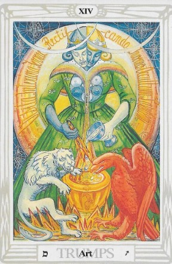

El Tarot de Thoth te trae el mensaje de El Arte, una carta que simboliza la integración, la alquimia interna y la transformación consciente. 🎨🃏
El Arte representa la fusión de opuestos y la búsqueda del equilibrio perfecto. Es un llamado a mezclar diferentes elementos en tu vida para lograr la armonía.
Hoy es un día para encontrar el punto medio entre extremos y transformar lo que ya tienes en algo aún mejor.
Escucha tu intuición y experimenta nuevas formas de hacer las cosas. Tu sabiduría interior te guiará.
Las relaciones requieren equilibrio. Busca el punto medio y la comprensión mutua.
Es el momento de innovar y mezclar ideas. La creatividad y la paciencia darán frutos.
Evita decisiones impulsivas y busca estabilidad financiera a largo plazo.
El bienestar surge de la armonía entre cuerpo y mente. Encuentra tu propio balance.